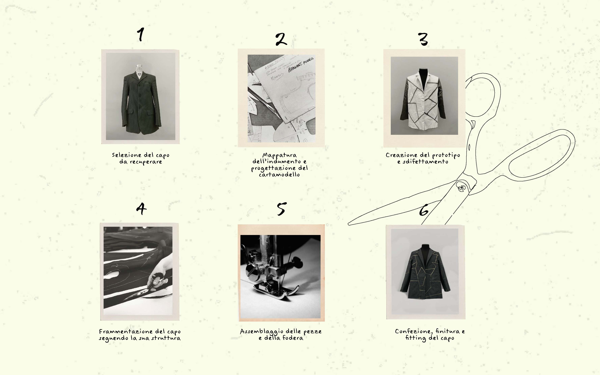
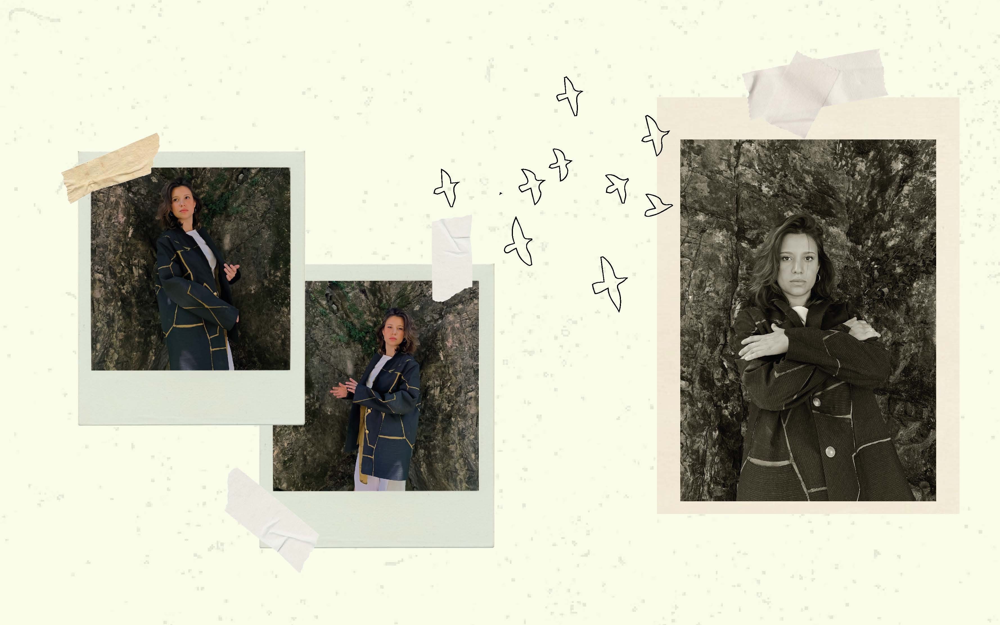

As the art of Kintsugi teaches us, we must not hide the wounds but celebrate them. It is in fact a traditional Japanese practice when a ceramic vase break to pieces, instead of throwing it away or trying to camouflage the cracks, to put the shards together and weld the fractures with gold. These golden veins, which were once cracks and imperfections, make an ordinary object a masterpiece. This art speaks of healing and resilience: the imperfection of an object does not determine its end but makes it more precious. Similarly, instead of getting rid of the old and deteriorated, this collection celebrates the stains and stretches of the fabric, considered as a result of life experiences. All the garments in this collection are in fact made manipulating used clothing, waste fabrics and stock. These discarded and consumed materials are given a second possibility through fragmentation. The name of the project, Kire, means cut. It is not intended as a destructive but regenerative action, because just through the cut the garment can be reborn, freeing itself from the condition of subordination to the new. The resulting pieces of fabric are reassembled thanks to the lining. Just as in the Kintsugi the artisan repair the wounds with laquer, the lining collects the pieces, filling the gaps between them and stitching cuts and tears. It becomes the main decorative element. In a game of absence-presence the lining draws a weave of lines between the cuts of the fabric with unpredictable results. This is the Kire collection, a collection that speaks of empathy and second possibilities, with extraordinary nostalgic power. In a game of interweaving and asymmetry these abandoned garments are reborn, transformed and narrated through all their defects.
 